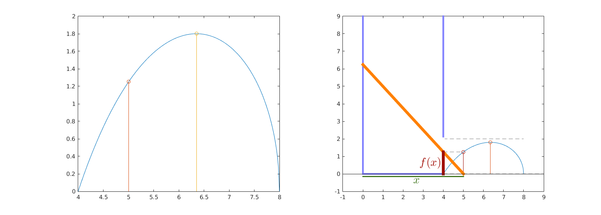
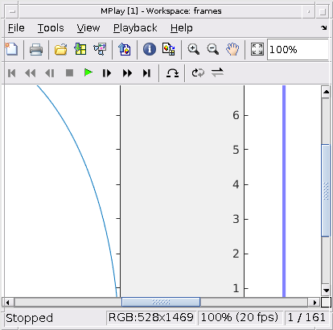

file: anal1_9het_szim_tornyos_v2.m author: Polcz Péter <ppolcz@gmail.com>
Created on 2016.11.23. Wednesday, 00:35:50
Contents
Szimbolikus számítások
syms x L a assume(in(x,'real') & in(L,'real') & in(a,'real') & ... a < x & x < L & L > a & a > 0) b = x-a; l = b*L/x; f = sqrt(l^2 - b^2); % erőltetett átalakítás f = simplify(f * x / (x-a))*(x-a)/x; disp '[1] deriválandó függvény: f(x) = ' pretty(f); df = simplify(diff(f,x)); disp '[2] deriváltja: f''(x) = ' pretty(df) xopt = solve(df,x); disp '[3] f''(x) == 0 megoldásai: [a warningokat vegyétek tárgytalannak (teljesülnek)]' pretty(xopt) % Tehát az optimumpont: xopt = L^(2/3)*a^(1/3); fopt = subs(f,x,xopt);
[1] deriválandó függvény: f(x) =
2 2
sqrt(L - x ) (a - x)
- ---------------------
x
[2] deriváltja: f'(x) =
2 3
a L - x
----------------
2 2 2
x sqrt(L - x )
Warning: The solutions are valid under the following conditions: L^2 ~=
L^(4/3)*a^(2/3); L^2 ~= L^(4/3)*a^(2/3)*((3^(1/2)*1i)/2 - 1/2)^2 &
L^(2/3)*a^(1/3)*((3^(1/2)*1i)/2 - 1/2) < L & a < L^(2/3)*a^(1/3)*((3^(1/2)*1i)/2
- 1/2). To include parameters and conditions in the solution, specify the
'ReturnConditions' option.
[3] f'(x) == 0 megoldásai: [a warningokat vegyétek tárgytalannak (teljesülnek)]
/ 2/3 1/3 \
| L a |
| |
| 2/3 1/3 / sqrt(3) 1i 1 \ |
| L a | ---------- - - | |
\ \ 2 2 / /
Numerikus behelyettesítés
Kapu magassága
h = 2;
Az eddig szimbolikus L és a változóknak most megadom a numerikus értékét
L = 8; a = 4;
Ami az x-et illeti, itt egy tömböt adok adok, hogy több pontban is kiértékelje a függvényt.
n = 200; x = linspace(L,a,n);
Itt történik a mágia: f szimbolikus változóba behelyettesítem x, L és a numerikus értékeit.
f = double(subs(f)); xopt = double(subs(xopt)); fopt = double(subs(fopt));
Meggyőződünk afelől, hogy jó-e a megoldás.
figure, hold on; plot(x,f); stem(xopt,fopt); title('Kritériumfüggvény és ennek maximuma')
Erre a kirajzoláskor lesz szükség: P1 pont x koordinátája (y = 0), majd a P2 pont y koordinátája (x = 0).
P1x = x; P2y = sqrt(L^2 - P1x.^2);

Szimuláció
fig = figure('Position',[165 407 1463 525]); color_f = [161, 15, 7]/255; color_h = [1 1 1]; color_x = [107, 188, 51]/400; color_aux = [0.5 0.5 0.5]; color_bar = [1 0.5 0]; color_tor = [0.5 0.5 1]; for i = 1:round(3*n/4); % Baloldali ábra. subplot(121) plot(x,f), hold on; % f(x) függvény képe a < x < L között stem(x(i),f(i)); % aktuális pont helye stem(xopt,fopt); % maximális pont helye axis([a L 0 h]), hold off; % Jobboldali ábra. subplot(122) % f(x) függvény és aktuális értéke plot(x,f), hold on stem(x(i),f(i),'Color', color_f); stem(xopt,fopt); % maximális pont helye % Segédszerkesztések (szürke, szaggatott) plot([a x(i)], [f(i) f(i)], '--', 'Color', color_aux); plot([a L+1], [0 0], '--', 'Color', color_aux) plot([a a], [0, h], '--', 'Color', color_aux) plot([a L], [h, h], '--', 'Color', color_aux) % Torony falainak ábrázolása, a torony ajtaját fehérrel kivágjuk. plot([0 0 a a], [L+1 0 0 L+1], 'LineWidth', 3, 'Color', color_tor) plot([a a], [0, h], 'LineWidth', 5, 'Color', color_h); % Rúd ábrázolása plot([P1x(i) 0],[0 P2y(i)], 'LineWidth', 5, 'Color', color_bar); % Az ajtóban milyen magasságban van éppen a rúd: f(x) plot([a a], [0, f(i)], 'LineWidth', 5, 'Color', color_f); text(a-0.1,f(i)/2, '$f(x)$', 'Interpreter', 'latex', ... 'HorizontalAlignment', 'right', 'FontSize', 20, 'Color', color_f); % x ábrázolása plot([0 x(i)],[0 0]-0.15, 'LineWidth', 2, 'Color', color_x); text(x(i)/2,0, '$x$', 'Interpreter', 'latex', ... 'VerticalAlignment', 'top', 'FontSize', 20, 'Color', color_x); % Megjelenítő széleinek meghatározása axis([-1 L+1 -1 L+1]), hold off % Felvétel frames(i) = getframe(fig); end mplay(frames) v = VideoWriter('newfile.mp4'); open(v) writeVideo(v,frames) close(v) 
Ábragenerálás
fig = figure('Position', [668 658 344 315]); for i = 50; plot(x,f), hold on % f(x) függvény és aktuális értéke plot(x,f), hold on stem(x(i),f(i),'Color', color_f); % Segédszerkesztések (szürke, szaggatott) plot([a x(i)], [f(i) f(i)], '--', 'Color', color_aux); plot([a L+1], [0 0], '--', 'Color', color_aux) plot([a a], [0, h], '--', 'Color', color_aux) plot([a L], [h, h], '--', 'Color', color_aux) % Torony falainak ábrázolása, a torony ajtaját fehérrel kivágjuk. plot([0 0 a a], [L+1 0 0 L+1], 'LineWidth', 3, 'Color', color_tor) plot([a a], [0, h], 'LineWidth', 5, 'Color', color_h); % Rúd ábrázolása plot([P1x(i) 0],[0 P2y(i)], 'LineWidth', 3, 'Color', color_bar); % Az ajtóban milyen magasságban van éppen a rúd: f(x) plot([a a], [0, f(i)], 'LineWidth', 2, 'Color', color_f); text(a-0.1,f(i)/2, '$f(x)$', 'Interpreter', 'latex', ... 'HorizontalAlignment', 'right', 'FontSize', 20, 'Color', color_f); % x ábrázolása plot([0 x(i)],[0 0]-0.45, 'LineWidth', 2, 'Color', color_x); text(x(i)/2,-0.35, '$x$', 'Interpreter', 'latex', ... 'VerticalAlignment', 'top', 'FontSize', 20, 'Color', color_x); % a ábrázolása plot([0 a],[0 0]-1.7, 'k', 'LineWidth', 2); text(a/2,-1.9, '$a$', 'Interpreter', 'latex', ... 'VerticalAlignment', 'bottom', 'FontSize', 20); % l ábrázolása text(a+(x(i)-a)/2+0.2,f(i)/2-0.2, '$l$', 'Interpreter', 'latex', ... 'VerticalAlignment', 'bottom', 'HorizontalAlignment', 'left', 'FontSize', 20, 'Color', color_bar*0.7); % Egyéb betűk text(0,0,'$O$','VerticalAlignment','top','HorizontalAlignment','right', 'Interpreter', 'latex') text(P1x(i),-0.1,'$P_1$', 'VerticalAlignment', 'top', 'HorizontalAlignment', 'left', 'Interpreter', 'latex') text(-0.1,P2y(i),'$P_2$', 'VerticalAlignment', 'bottom', 'HorizontalAlignment', 'right', 'Interpreter', 'latex') text(a,f(i),'$A$', 'VerticalAlignment', 'bottom', 'HorizontalAlignment', 'left', 'Interpreter', 'latex') text(a,0,'$B$', 'VerticalAlignment', 'top', 'HorizontalAlignment', 'left', 'Interpreter', 'latex') axis([-1 L+1 -2 L+1]), hold off grid on end